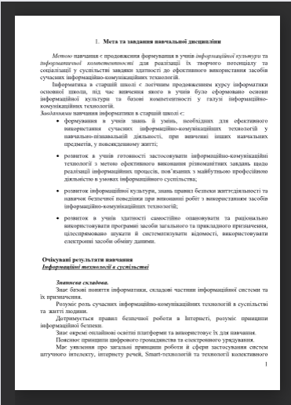

Інформатика
Календарне планування

- Мета та завдання навчальної дисципліни
- Структура навчальної дисципліни
- Програма навчальної дисципліни
- Теми практичних занять
- Методи навчання
- Методи контролю
- Методичне забезпечення
- Рекомендована література
Структура навчальної дисципліни
|
№ з/п |
Тема | Всього | Лекції | ЛПЗ |
|---|---|---|---|---|
| Інформаційні технології в суспільстві | 8 | 6 | 2 | |
| Інструктування з БЖД та правил поведінки під час роботи за комп’ютером. Інформаційні системи у сучасному суспільстві. | 8 | 2 | - | |
| 1. | Інформаційна безпека. Загрози при роботі в Інтернеті і їх уникнення. Навчання в Інтернеті. Професії майбутнього. | 2 | 2 | - |
| Системи електронного врядування. Штучний інтелект, інтернет речей, Smart-технології. | 2 | 2 | - | |
| Практична робота №1. Інструктаж з БЖД. Робота з навчальними програмами. | 2 | - | 2 | |
| Моделі і моделювання. Аналіз та візуалізація даних | 14 | 8 | 6 | |
| Комп’ютерне моделювання об’єктів і процесів. Основи статистичного аналізу. | 2 | 2 | - | |
| Пошук та збір наборів даних. Соціальні аспекти масштабного аналізу даних. | 2 | 2 | - | |
| Практична робота №2. Інструктаж З БЖД. Аналіз даних за допомогою функцій табличного процесора. | 2 | - | 2 | |
| 2. | Програмні засоби для складних обчислень, аналізу даних та фінансових розрахунків. | 2 | 2 | - |
| Практична робота № 3. Інструктаж З БЖД. Розв’язування систем рівнянь, оптимізаційних задач. | 2 | - | 2 | |
| Візуалізація рядів і трендів даних. Інфографіка. | 2 | 2 | - | |
| Практична робота №4. Побудова графіків та діаграм. | 2 | - | 2 | |
| Системи керування базами даних | 36 | 10 | 8 | |
| Проектування моделі бази даних | 8 | 6 | 2 | |
| Поняття бази даних. Поняття, призначення й основні функції систем управління базами даних. | 2 | 2 | - | |
| Модель «сутність-зв’язок» предметної області. Поняття сутності, атрибута, ключа, зв’язку | 2 | 2 | - | |
| Класифікація зв’язків за множинністю та обов’язковістю. | 2 | 2 | - | |
| Практична робота №5. Інструктаж з БЖД. Побудова моделі даних предметної області. | 2 | - | 2 | |
| Створення реляційної бази даних | 12 | 8 | 4 | |
| Створення та відкриття бази даних. Основні об’єкти БД. Відображення моделі «сутність-зв’язок» на базу даних. | 2 | 2 | - | |
| Створення БД, таблиць та наповнення їх інформацією. Створення зв'язків у СКБД. | 2 | 2 | - | |
| Практична робота №6. Інструктаж з БЖД. Створення бази даних у програмному середовищі. | 2 | - | 2 | |
| 3. | Розробка інтерфейсу користувача для введення даних. Створення форм для введення даних у таблиці. | 2 | 2 | - |
| Використання в інтерфейсі користувача БД кнопок, створення меню користувача БД. | 2 | 2 | - | |
| Практична робота №7. Інструктаж з БЖД. Розробка та реалізація інтерфейсу проекту. | 2 | - | 2 | |
| Використання реляційної бази даних | 16 | 10 | 6 | |
| Сортування, пошук і фільтрація даних. Поняття запиту до реляційної бази даних. Створення простих вибіркових запитів. | 2 | 2 | - | |
| Практична робота №8. Інструктаж з БЖД. Пошук та фільтрація даних. | 2 | - | 2 | |
| Основи мови SQL. Оператор IN. Віднімання множин записів | 2 | 2 | - | |
| Вибіркові запити з фразами GROUP BY та HAVING. | 2 | 2 | - | |
| Застосування мови SQL для створення запитів на додавання, оновлення та видалення даних | 2 | 2 | - | |
| Практична робота №9. Інструктаж з БЖД. Розробка запитів та їх реалізація. | 2 | - | 2 | |
| Створення звітів за однією та кількома таблицями. | 2 | 2 | - | |
| Практична робота №10. Інструктаж з БЖД. Підготовка та реалізація звітів. | 2 | - | 2 | |
| Інформаційна безпека | 18 | 16 | 2 | |
| Основи безпеки інформаційних технологій | 4 | 4 | - | |
| Основні поняття в області безпеки інформаційних технологій. Загрози безпеці інформації в автоматизованих системах. | 2 | 2 | - | |
| Основні ненавмисні і навмисні штучні загрози. Технічні та програмні засоби добування інформації | 2 | 2 | - | |
| Забезпечення безпеки інформаційних технологій | 6 | 6 | - | |
| Об'єкти захисту. Види заходів протидії загрозам безпеки. Правові основи забезпечення безпеки інформаційних технологій. | 2 | 2 | - | |
| 4. | Основні захисні механізми. | 2 | 2 | - |
| Методи захисту інформації. Міжнародні стандарти інформаційної безпеки | 2 | 2 | - | |
| Забезпечення безпеки комп'ютерних систем і мереж | 8 | 6 | 2 | |
| Забезпечення безпеки в комп'ютерних системах і мережах. | 2 | 2 | - | |
| Системи аналізу вмісту поштового і веб-трафіку. Віртуальні приватні мережі (VPN). | 2 | 2 | - | |
| Антивірусні засоби захисту. | 2 | 2 | - | |
| Практична робота №11. Інструктаж з БЖД. Забезпечення безпеки комп'ютерних систем і мереж. | 2 | - | 2 | |
| Мультимедійні та гіпертекстові документи | 12 | 6 | 6 | |
| Технології опрацювання мультимедійних даних. Проектування та створення об'єктів мультимедіа | 2 | 2 | - | |
| Системи керування вмістом для веб-ресурсів. Створення та адміністрування сайту. | 2 | 2 | - | |
| 5. | Поняття про мову розмічання гіпертекстового документа. Гіпертекстові, графічні, анімаційні та мультимедійні елементи на веб-сторінках. | 2 | 2 | - |
| Практична робота №12. Інструктаж з БЖД. Створення гіпертекстових документів. | 2 | - | 2 | |
| Ергономіка розміщення відомостей на веб-сторінці. Поняття пошукової оптимізації та просування веб-сайтів. | 2 | 2 | - | |
| Практична робота №13. Інструктаж з БЖД. Автоматизоване створення веб-сайта. | 2 | - | 2 | |
| Основи електронного документообігу | 17 | 26 | 36 | |
| Документи та документообіг | 6 | 2 | 4 | |
| Поняття документу. Документообіг. Стиль та шаблони. Реквізити документа. | 2 | 2 | - | |
| Практична робота №14. Інструктаж з БЖД. Використання шаблонів та стилів документа | 2 | - | 2 | |
| Практична робота №15. Використання об’єктів у документі. | 2 | - | 2 | |
| Технічні та програмні засоби обробки документів та інформації | 4 | 2 | 2 | |
| 6. | Системи управління електронними документами. Засоби створення, зберігання, обробки, копіювання і транспортування документів. | 2 | 2 | - |
| Практична робота №16. Інструктаж з БЖД. Створення та пересилання документів | 2 | - | 2 | |
| Електронний документообіг | 7 | 2 | - | |
| Електронний документообіг. Електронний цифровий підпис. | 2 | 2 | - | |
| Забезпечення конфіденційності електронних документів. Електронний офіс. | 2 | 2 | - | |
| Практична робота № 17. Інструктаж з БЖД. Маніпулювання електронними документами. | 2 | - | 2 | |
| Підсумкове заняття | 1 | 1 | - | |
| Всього | 105 | 71 | 34 |